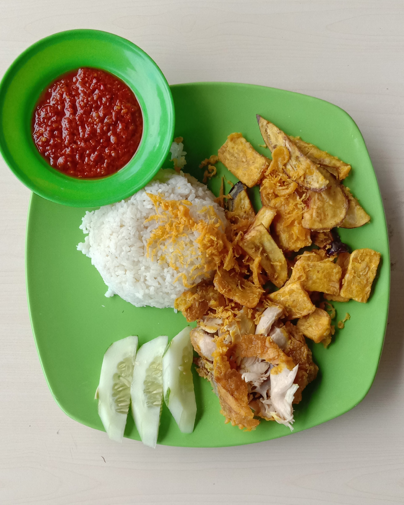

Ayam goreng renyah diulek dengan sambal ijo pedas yang nagih. Cocok untuk semua suasana!
 Lihat MenuRestoran ayam geprek sambal ijo kami menyajikan hidangan autentik dengan bahan segar dan resep tradisional. Didirikan sejak 2020, kami berkomitmen untuk memberikan pengalaman makan yang lezat dan terjangkau.
Alamat: Jl. Raya No. 123, Jakarta
Telepon: 0812-3456-7890
Email: info@ayamgeprek.com
Follow kami di Instagram: @ayamgeprekijo